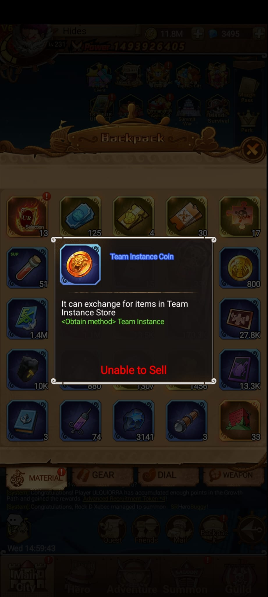
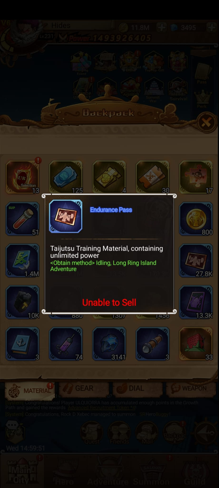
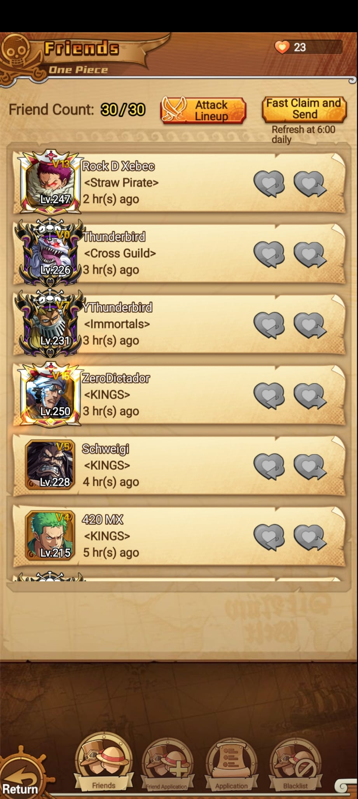
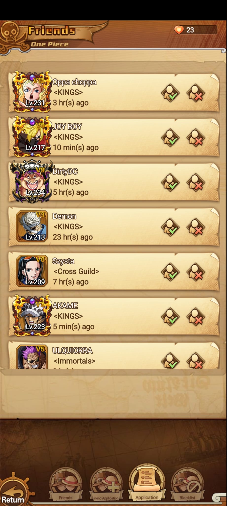
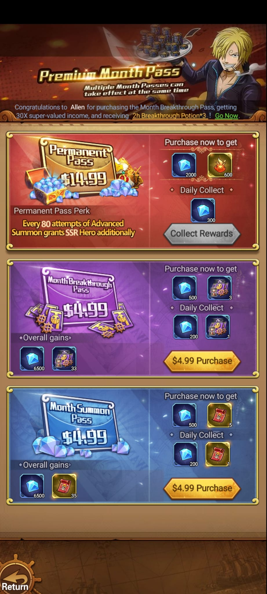
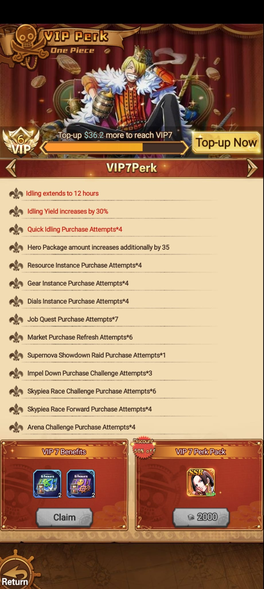
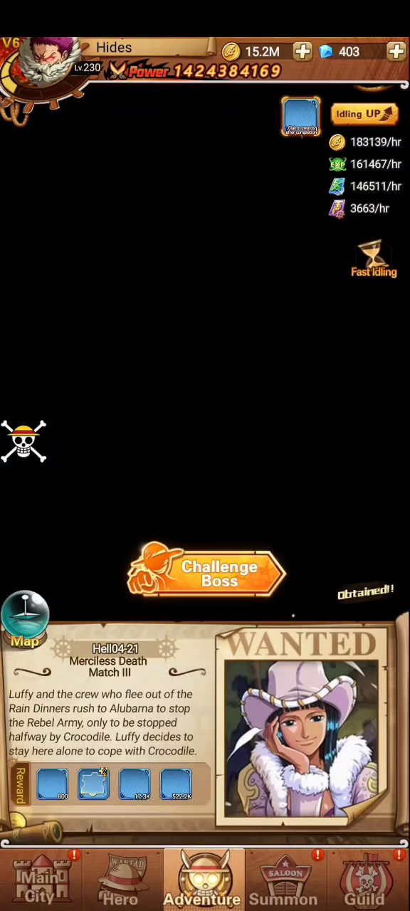
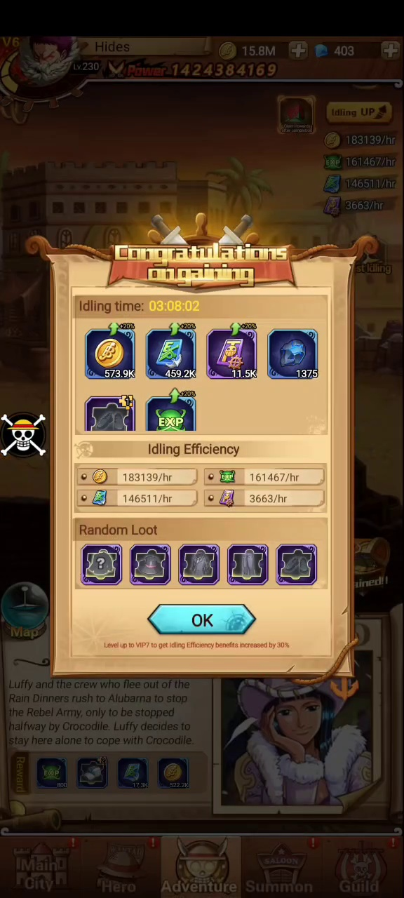
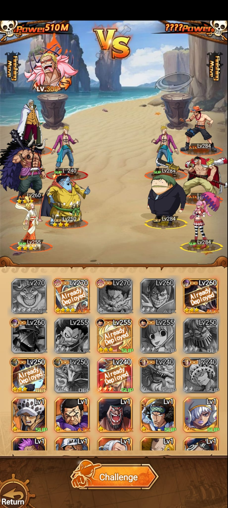

Oro
Recurso principal visible en la barra superior. En la captura: 15.2M.
 Idle Pirate Wiki
Idle Pirate Wiki
Mecánicas
Resumen de recursos, eventos, tiendas y modos. Esta página queda como índice para ir documentando cada función cuando tengamos más imágenes o video.
Recursos
Recurso principal visible en la barra superior. En la captura: 15.2M.
Moneda premium visible en la barra superior. En la captura: 403.
Valor total de progreso del jugador. En la captura: 1424384169.
Inventario




Haki


Eventos y modos
| Sistema | Tipo | Notas |
|---|---|---|
| Festival Event | Evento | Evento temporal pendiente de documentar. |
| Growth Path | Progreso | Probable ruta de recompensas por avance. |
| Time-limited Event | Evento | Evento por tiempo limitado. |
| Combo Top-up Gift | Tienda | Paquete de compra o recarga. |
| Discount Pack | Tienda | Paquete con descuento. |
| Month Pass | Pase | Beneficios por pase mensual. |
| Island Survival | Modo | Modo especial pendiente de detalles. |
Social y beneficios




Se observan pestañas Friends, Recommend, Applications y Blacklist.
Hay capturas desde VIP1 hasta VIP19. Falta transcribir una tabla exacta por nivel.
Premium Month Pass, Month Breakthrough Pass y Month Summon Pass aparecen como productos separados.
Adventure e idle


La campaña muestra un botón para retar al jefe del capítulo actual.
Se observan ganancias por hora: oro, EXP y otros recursos de progreso.
Un mensaje indica que VIP7 aumenta beneficios de idling efficiency en 30%.
Vegapunk's
Esta sección queda como resumen. La ficha completa está en Vegapunk's Lab, con guardians, recompensas idle, Resonance y Potion Crafting.




Hay 3 laboratorios y cada uno tiene 10 guardians. Al derrotar un guardian se habilitan recompensas idle; cuando se alcanza el máximo, dejan de generarse más rewards.
Para desafiar guardians se necesita Credit suficiente. La regla indica que el crédito requerido depende del total de los héroes dentro de Resonance.
Solo se puede desafiar el siguiente guardian después de derrotar el anterior. El intervalo entre dos desafíos es de 10 horas.
Captura observada: Total Qualification 7806, Resonance level 41, TeamHP +319550 y TeamATK +19910.
Usa 1 Medicine Herb y 8000 de oro por craft. En Proficiency Lv.9 (320/2000), las chances visibles son ATK 58%, DEF 21% y SUP 21%. La pantalla también muestra botones Craft / Fast Craft y el acceso Creative Direction.
| Lab | Nivel enemigo | Idle length visible | Reward visible | Acquired Items |
|---|---|---|---|---|
| S Lab | Lv.100 | 07:45:07 | Diamante x40 | 0/120 |
| S Lab | Lv.103 | 01:13:03 | Ticket morado x2000 | 0/6000 |
| S Lab | Lv.106 | 03:49:02 | Recurso verde x30K | 0/90000 |
| S Lab | Lv.109 | 05:24:23 | Recurso azul x400 | 0/1200 |
| S Lab | Lv.112 | 07:22:49 | Material oscuro x200 | 0/600 |
| SS Lab | Lv.135 | 00:41:16 | Diamante x40 | 0/120 |
| SS Lab | Lv.140 | 04:07:29 | Ticket morado x2000 | 0/6000 |
| SS Lab | Lv.145 | 04:38:27 | Recurso verde x30K | 0/90000 |
| SS Lab | Lv.150 | 04:41:20 | Recurso azul x400 | 0/1200 |
| SS Lab | Lv.155 | 00:58:46 | Material oscuro x200 | 0/600 |
| SSS Lab | Lv.247 | 04:09:01 | Hoja verde x2 | 0/6 |
| SSS Lab | Lv.249 | 03:59:36 | Diamante x40 | 0/120 |
| SSS Lab | Lv.256 | 01:36:13 | Ticket morado x2400 | 0/7200 |
| SSS Lab | Lv.258 | 02:01:15 | Recurso verde x3000 | 0/9000 |
| SSS Lab | Lv.260 | 09:16:16 | Recurso dorado x100 | 0/300 |
Modos documentados
Long Ring Island Adventure, Supernova Showdown, Thriller Bark y Haki Training Room.
JefesBoss Contest, Sea Train, Voyage Adventure y Enemy Incoming.
MapaAccesos visibles de la pantalla inicial y datos de jugador.
PvPRanking, rivales visibles, intentos, recompensas y tienda.
LaboratorioS Lab, SS Lab, SSS Lab, Resonance, guardians y Potion Crafting.